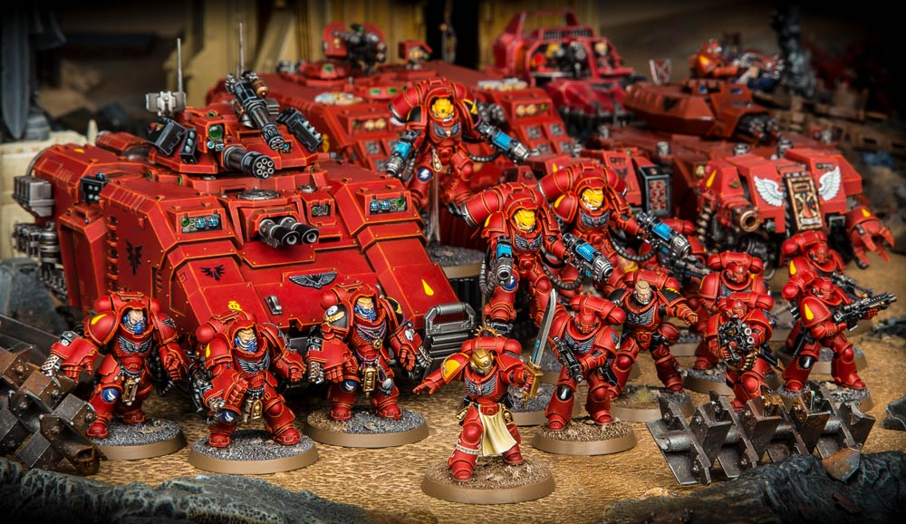

Blood Angels Chapter (IX Legion Astartes)
The Blood Angels are the IX Legion Astartes of the original 20 preheresy legions. Their Primarch is Sanguinius the "Angel". Their homeworld is Baal a red rust desert covered planet. The Legion is one of the longest lasting, with some of the greatest heraldry and one of my favorite primarchs. They suffer from a genetic disease that makes them go crazy and were one of the few legions present to defend Terra during the Siege of Terra. They are one of the most popular legions in the franchise, favoring a combination of raw savegery and noble penance, and have faced many major threats throughout their long history including the Tyranids, forces of Chaos and the Eldar to name a few.
One of the most famous and enjoyed book about the Blood angels
More books can be found on Black Library or audio options are available on Audible.
40 Facts about the Blood Angels Chapter
More information about the Blood Angels Legion/Chapter can be located at Blood Angel Lexicanum or Games Workshop